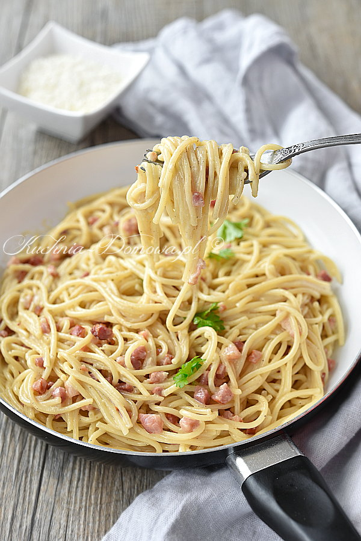

Przepis na carbonare
Składniki (2 porcje)
2 jajka
100 g boczku (wędzonego lub suszonego - pancetty)
150 g makaronu spaghetti
2 ząbki czosnku
2 łyżki drobno posiekanej natki pietruszki
30 g sera Pecorino (lub Parmezanu lub Grana Padano)
sól i świeżo zmielony czarny pieprz
Przygotowanie
Makaron ugotować al dente w osolonej wodzie. Jajka sparzyć wrzątkiem, wbić do głębokiego talerza, doprawić solą i roztrzepać widelcem.
Na patelnię włożyć pokrojony w kosteczkę boczek i podsmażyć na małym ogniu przez kilka minut aż się lekko zrumieni. Dodać starty czosnek oraz posiekaną natkę pietruszki i smażyć jeszcze przez kilkanaście sekund.
Trzymając patelnię na małym ogniu dodać makaron i wymieszać. Odstawić z ognia, dodać połowę sera i doprawić świeżo zmielonym pieprzem.
Makaron polać roztrzepanymi jajkami i wymieszać. Jajka nie mogą całkowicie się ściąć, mają utworzyć kremowy sos i tylko trochę zgęstnieć od gorącego makaronu.
Wyłożyć na talerze i posypać pozostałym serem.
